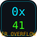

content/phases.json could not be read. If you opened index.html directly from disk, serve the folder instead: python3 -m http.server or npx electron .
python3 -m http.server
npx electron .
Your name is embedded on the report title page.
Includes: disclaimer ack, per-phase answers, commands, expected outputs, final exploit script.
⚠ Some phases have unanswered checkpoints — they will be marked as skipped in the report.
This app requires JavaScript.